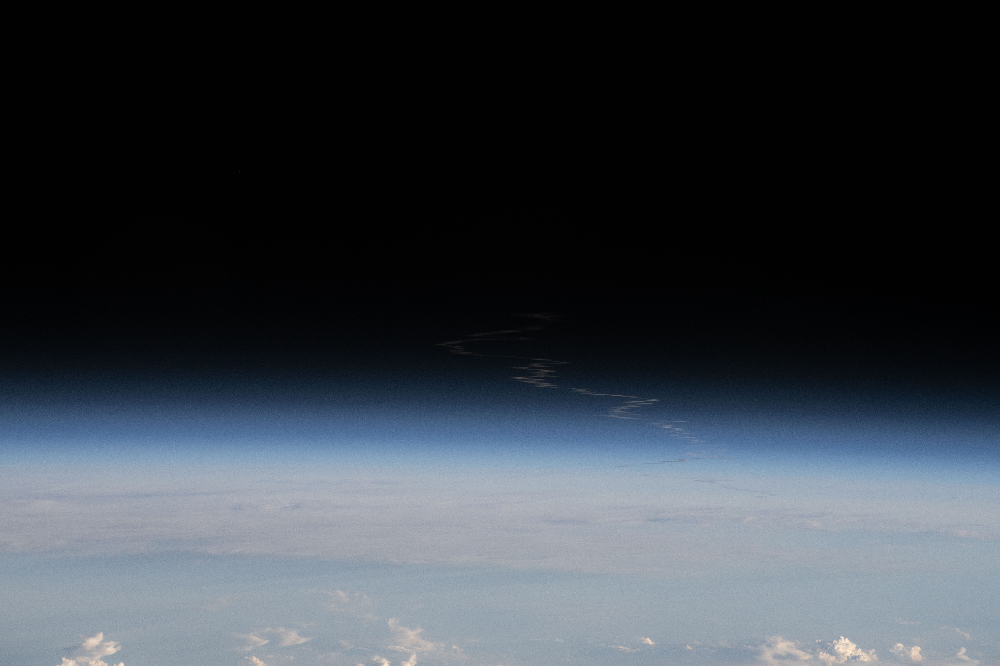
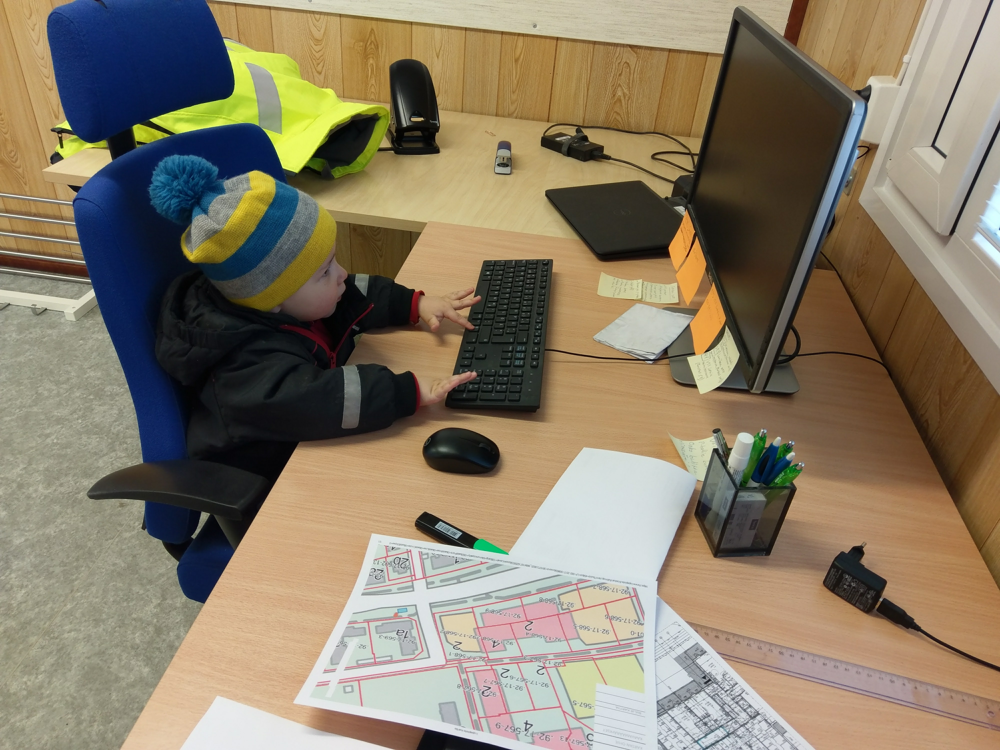

01 · CosmosSpace & the long now
From Voyager's Pale Blue Dot to Artemis and Starship — I track what humans are sending past the atmosphere and why it matters down here.
Explore the cosmos threadI'm Charlles — an IT professional based between systems and stars. This is my quiet corner of the web for the things I care about: networks that work, clouds that scale, recipes worth repeating, and the next great human voyage off-planet.
Read my storyA mixed bag of obsessions — half technical, half tactile. Tap any card to read more on the interests page.

01 · CosmosFrom Voyager's Pale Blue Dot to Artemis and Starship — I track what humans are sending past the atmosphere and why it matters down here.
Explore the cosmos thread
02 · TechThe right tool, well used. I'm interested in how everyday devices actually work — and how the boring infrastructure behind them holds up.
See the gear log 03 · Travel
03 · Travel
New cities, new neighbourhoods, a working SIM card and a notebook — travel keeps my perspective from getting stale.
Wander the route 04 · Kitchen
04 · Kitchen
Food as a small daily ritual — Brazilian food, weeknight pastas, and the occasional ambitious Sunday project.
Open the kitchenWho I am, what I work on, the skills I'm sharpening, and where I'm heading next in cybersecurity and cloud.
Read the about page